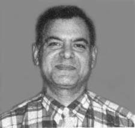

|
|
More Reaction in the acquittal
of Dr Younis Sheikh !

Dr Younus Shaikh
Indeed we rejoice the news dear athiest,
Infact he was and people like him are in my thoughts and I started this thread
long back for those who have been wronged in the name of religion. specially
Islam..
http://www.faithfreedom.org/forum/viewtopic.php?p=7140&highlight=#7140
And many of the forums and sites like FFI have played a stellar role of
advertising and educating Muslims and nonmuslims alike...
My only hope is.. I will not hear a news like.. Some Mohammadonian barbarian
took away the life Dr Younis Sheikh in that country that is called LAND OF
PURE...I wish he could get out of that country and stay away for couple
years...
with best wishes
yeezevee
Excellent.. good news!
adnan
Fantastic!!!!!
Best news I've heard for some time.

_________________
Scandinavian infidel
Great news indeed.
MrHappy
You beat me to it! I got an
email with the info from Humanists' Association of Canada. I will
post it below.
| Quote: |
IHEU Press Release London 23rd January 2004
For Immediate Release
Blasphemy Doctor Released from Death Row
The International Humanist and Ethical Union (IHEU) announced
today that Dr Younus Shaikh, who had languished in gaol in
Pakistan since October 2000 under sentence of death for
blasphemy, has been acquitted and freed after an appeal and
retrial.
In an international campaign led by IHEU, Dr Shaikh was
declared a Prisoner of Conscience by Amnesty International,
and thousands of people worldwide lobbied their politicians
and the Government of Pakistan on his behalf.
The trial of Dr Shaikh, held throughout the Summer of 2001,
took place in a hostile courtroom packed with Islamic
fundamentalists. The final two
sessions were held in-camera with gun-toting Pakistani Taliban
waiting
outside. In October 2003, the Appeal Court ordered a retrial
at which,
following threats by fundamentalists to his lawyers and their
families, Dr
Shaikh courageously pleaded his own case
Speaking from London today, Dr Shaikh explained:
“The judge accepted my legal arguments and found the charges
against me to be baseless. My accusers, two Mullahs and some
Islamist students, had lied.” He described his ordeal as:
“Islamic terrorism through the abuse of law and the state
apparatus.”
IHEU condemns the abuse, false imprisonment and mistreatment
of this
courageous and innocent man forced to spend over three years
in prison, two in the death cell in solitary confinement.
Pakistan’s infamous blasphemy laws are widely abused to make
false
accusations against both Muslims and members of religious
minorities, such
as Christians and Ahmadis, as well as innocent business rivals
and political
opponents. Those accused under the blasphemy laws are
immediately imprisoned with no effective right to bail. If
pronounced guilty, they face a mandatory death sentence. It is
estimated that over 100 victims of Pakistan’s medieval
blasphemy laws are currently in prison either awaiting trial
or already under sentence of death.
The international Humanist community calls upon President
Parvez Musharraf and the Pakistani Parliament to immediately
abolish these profoundly unjust laws – an ugly stain on the
reputation of the nation and people of Pakistan.
For further information call:
IHEU President, Roy Brown on +41 (0) 79 212 5603
IHEU office at +44 (0) 207 631 3170
IHEU Executive Director, Babu Gogineni on +44 (0) 7801 570 150
----------
Background to IHEU Press Release 23 Jan 2004
Blasphemy Doctor, Younus Shaikh released from Death Row
Dr Shaikh
Mohammed Younus Shaikh was born in Chishtian, Pakistan on 30th
May 1952. After High School he studied medicine in Multan
where he qualified as a doctor of medicine, and did
post-graduate studies in Dublin and London. He worked as a
trainee surgeon in the United Kingdom from 1981 until 1988. He
returned to Pakistan where he taught at a medical college in
Islamabad.
As a Human Rights activist in Pakistan he attracted the
attention of the
Islamic fundamentalists. He took part in the Pakistan-India
Forum for Peace and Democracy, and was a member of the South
Asian Fraternity, South Asian Union and the Human Rights
Commission of Pakistan. In 1990 he started a Humanist
organisation called “The Enlightenment”, inspired by the ideas
of the European Enlightenment and Renaissance.
Kashmir
At a meeting of the South Asian Union on 1st October 2000,
Younus Shaikh
suggested that in the interest of the people of Kashmir, the
line of control
between the Indian and Pakistani forces should become the
international
border. This clearly offended a Pakistani officer who
responded by saying to Dr Shaikh that “I will crush the heads
of those that talk like this”.
On 3rd October Dr Shaikh was suspended by the college without
explanation. It transpired that an employee of the Pakistani
Foreign Office, who was also one of Dr Shaikh’s students, had
complained to a cleric, saying that on 2nd October in a
lecture between 12:00 noon and 12:40pm, the doctor had made
blasphemous remarks about the Prophet of Islam. The cleric
filed a complaint with the police, and Younus Shaikh was
arrested on the evening of 4th October and charged with
blasphemy.
Trial and Acquittal
Those accused of blasphemy under Article 295/c of the Pakistan
Legal Code are unable to obtain bail but are held in custody
awaiting trial. On 18th August 2001, after a trial lasting
several months during which it was
established that the alleged events had never taken place, Dr
Shaikh was
nevertheless found guilty and sentenced to death. Sadly, in
Pakistan, such
injustices are not uncommon in cases of alleged blasphemy.
For the next two years, Dr Shaikh was held in solitary
confinement in a
death cell in the Central Gaol in Rawalpindi. He appealed to
the High Court,
but on 15th July 2002 the two appeal judges failed to agree
and the case was referred to a senior judge for a final
decision.
A delay of more than a year then ensued before the referee
took up the case. On October 9th 2003, this judge finally
decided that the original judgement was unsound but instead of
acquitting Dr Shaikh, remanded the case back to a lower court
for retrial.
The retrial was held over three sessions in November 2003. In
the light of
the harassment and intimidation suffered by his lawyers at the
earlier
hearings, and much against the advice of the judge, his
colleagues, his
family and the members of the diplomatic community present in
court, Dr
Shaikh decided this time to conduct his own defence. The
prosecuting counsel tried to exploit the religious feelings of
the court but Dr Shaikh confined his defence to legal
arguments and was finally acquitted on 21st November. He tells
us that he was inspired by the defence speech of Sir Thomas
More in “A Man for All Seasons”. Fortunately the outcome this
time was different.
Escape to Freedom
Dr Shaikh was released from the gaol in great secrecy, was
offered, but
refused, a police bodyguard, and went into hiding for several
weeks, meeting family and friends and even participating,
incognito, in a debate on Human Rights, while making
arrangements to leave the country. He has now left Pakistan
for Europe.
Many victims of the Pakistani blasphemy laws have failed to
survive prison
while a number of those tried and acquitted have been murdered
following
their release. As recently as July 2002, Mohammed Yousaf was
shot dead
inside the Central Gaol in Lahore while awaiting his appeal.
On 7th February 2003, Mushtaq Zafar, a 55 year-old man accused
of blasphemy was shot dead on his way home from the High
Court. And in June 2003, a woman who had accused the police of
a gang rape was later charged with blasphemy and murdered even
before her trial began.
Even the legal profession are not immune from attack. Defence
lawyers have been intimidated by fundamentalists and even a
High Court judge was murdered after acquitting an accused.
Last week, one of Dr Shaikh’s supporters, speaking anonymously
from
Islamabad said:
“We may draw some satisfaction and may even feel like
celebrating that our efforts in pursuing this case led to the
acquittal of Dr. Sheikh, but let's
not forget that as long as the Blasphemy law is on the statute
book, it will
continue to be misused. At this very moment there are several
innocent
people, victims of this black law, languishing in various
jails and lock-ups
of the country awaiting an uncertain future. And these victims
may not be as fortunate as Dr. Sheikh was. Dr. Sheikh had a
circle of committed friends inside and outside the country.”
“It is also a sad reflection on the state and society of
Pakistan that even
when individuals are exonerated by law of any guilt, they are
forced to flee
the country for their safety. The state or society is unable
or unwilling to
provide them protection. Dr. Sheikh was not at all eager to
leave the
country. If he had a choice he would have stayed with his
family
and friends. I could see his reluctance to leave the country
written large
on his face when I accompanied him to the airport.”
“The bottom line is that we must continue our campaign until
this
draconian law, along with similar other medieval laws, is
undone or at least
modified to save the innocent people from its abuse.”
The International Humanist and Ethical Union, the World
umbrella
organisation for Humanist, Secular, Freethought and Ethical
Culture
organisations, with nearly 100 member organisations in 37
countries will
continue to work tirelessly for the repeal of all such laws.
Roy Brown, President, IHEU
For further information call:
IHEU President, Roy Brown: +41 79 212 5603
IHEU office: +44 (0) 207 631 3170
IHEU Executive Director, Babu Gogineni: +44 (0) 7801 570 150 |
|
|
|
Ibn Rushd
From: "Roy Brown"
Date: Fri Jan 23, 2004 10:16 pm
Subject: Dr Shaikh is Free!
Dear Friends
Brilliant news.
Please see www.iheu.org for details
Many thanks to all of you who wrote, lobbied, phoned, met, cajoled and
otherwise shook the trees for Younus.
Roy Brown
From: "fatemolla ." <fatemolla@hotmail.com>
Date: Fri Jan 23, 2004 10:01pm
Subject: TUG OF WAR.
TUG OF WAR.
(Dori Tana-Tani).
This is what it is called, Tug Of War. Or we may call it, Rope-Pulling. In
this game two competing groups pull a thick strong rope towards opposite
directions. The “biggest, fattest, huge tummy’ed” person tie the end of the
rope around his waist, and the rest pull it. Winner is the party who can
pull the rope towards themselves.
It used to be played in Bengal-villages. Now it is being played in
international arena, between us and them. We are pulling the rope towards
humanity, they are pulling it towards theocracy. In Bengal-villages it is
entertainment, here it is a deadly encounter. Once the game is over, history
will bury one of us in its huge stomach, forever.
Either us, or them. So we had to bite a death-bite, we can’t afford to
loose. And they did it too, they can’t afford to loose either! For us it is
the question of saving humanity from that poisonous snake. For them it is
the vital question of their existence.
Win or die. For both of us.
They gave us a blow in Pakistan by sentencing stoning-to-death to Zafran
Bibi. We defeated them by saving her with a terrific international scream.
They emerged in BD and defeated us by placing two killers as ministers in
the parliament. We rushed to Islamabad and defeated them by a new Law of
women deciding their own marriage. They went to NWFP (Pakistan) and defeated
us by passing a law that no women be attended by male-technicians for
ultrasound and ECG. We showed up in Bhurghata of Barisal (23 March 2003) and
kicked away the Islamic State-ists. They went to Indonesia and smashed us by
passing a law giving fathers the right to marry their daughters against the
girls’ will. We went to Nigeria and won in case of Amina Kurami. They went
to Iran and defeated us by killing freethinkers and journalists. We came
back to Pakistan and snatched Dr. Yunus Shaikh from their deadly claw.
A global drama is going on in full force. One thing is clear. Our means is
peaceful. Theirs is violence.
Who will win?
Thanks.
**************

Please
send your article at:
mukto-mona@yahoogroups.com
Moderators, Mukto-mona
https://gold.mukto-mona.com
 Back
to main news... Back
to main news...
|
|
|